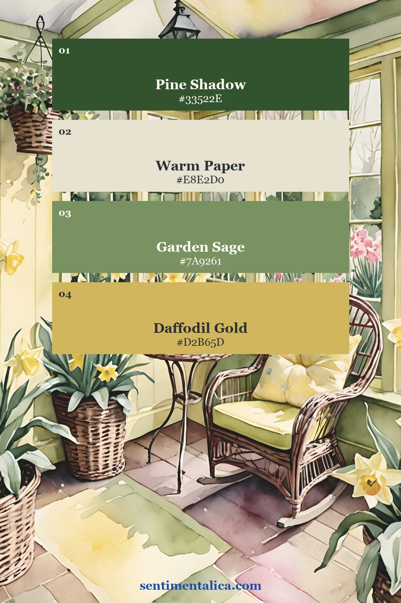
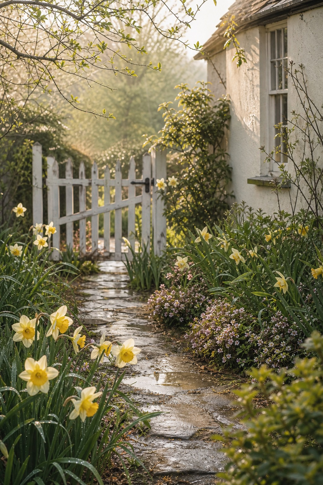
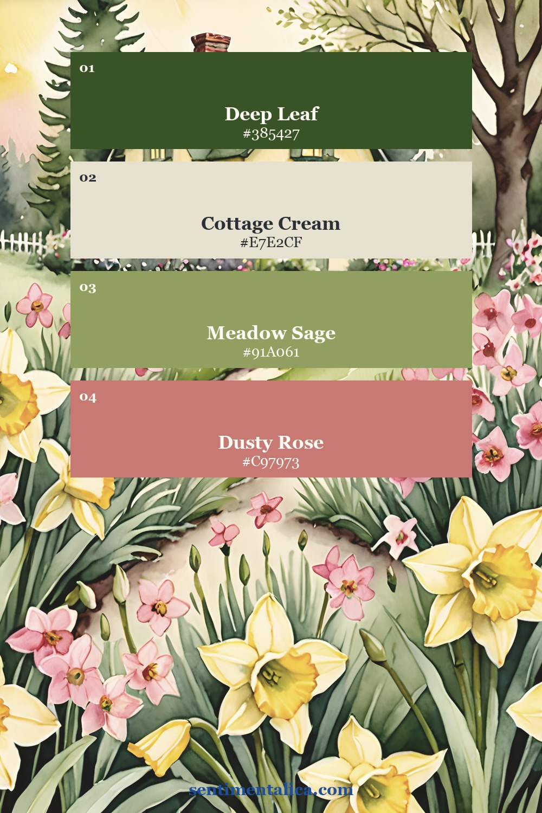
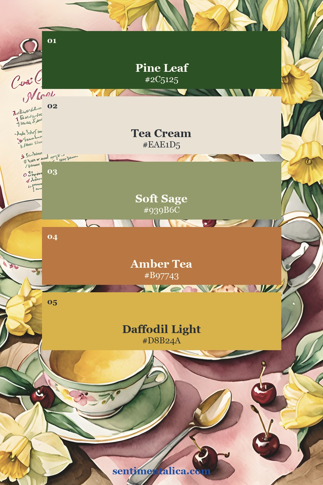
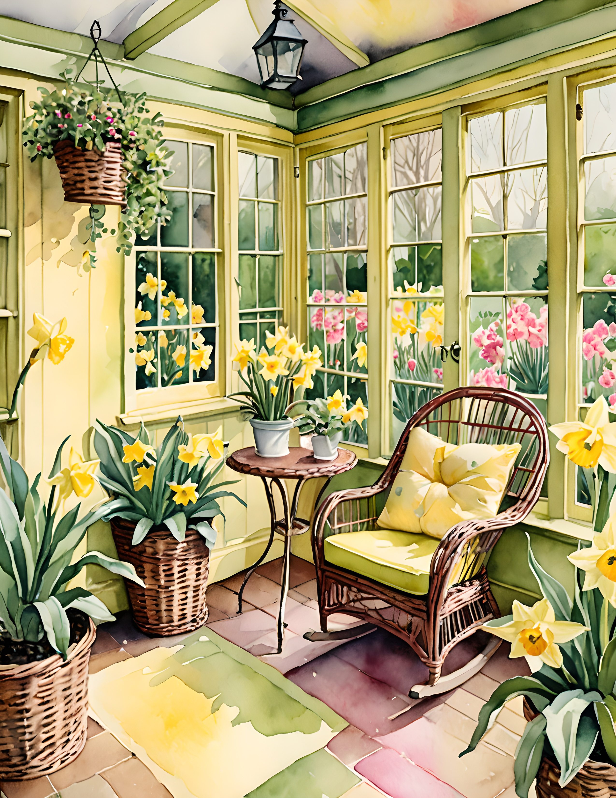
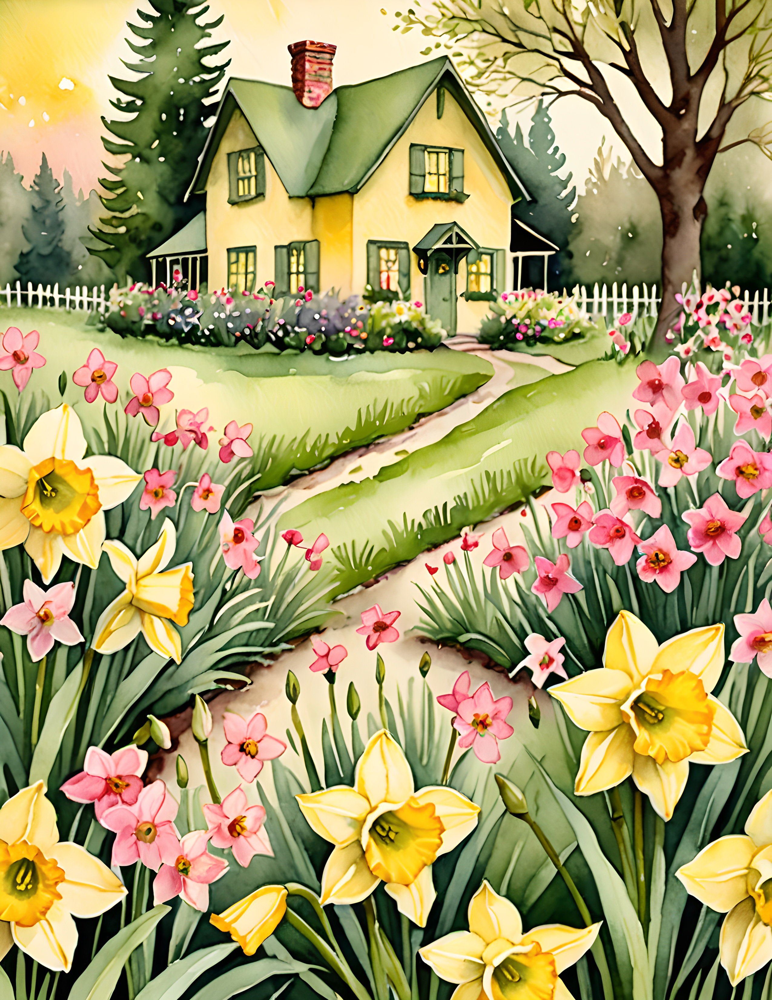
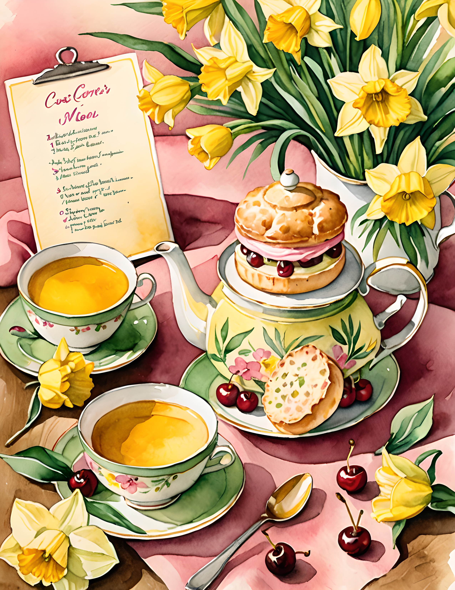
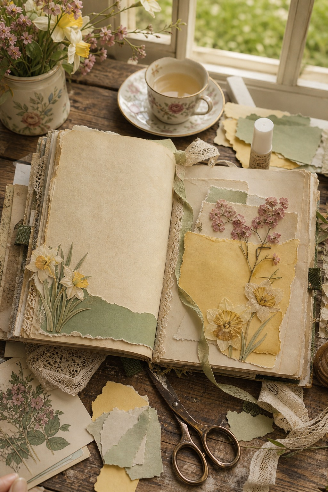

Cottage Bloom is a good kit for the kind of journal page that does not need a dramatic story. It feels like opening a window after rain: pale yellow flowers, softened greens, cream paper, and a few small pink notes that keep the page from becoming too quiet.
The palette works especially well when you want a spread that feels optimistic but still vintage. Yellow can become too bright very quickly, so the trick is to let it behave like sunlight rather than highlighter ink.

Start with the green
Use the deepest green first. It gives the page weight and makes the daffodil colors look intentional. A dark green label, tab, stitched edge, or narrow torn strip is enough. Once the anchor is in place, the cream and yellow pieces can stay light without floating away.

Let yellow be the light
The prettiest way to use daffodil yellow is in small warm areas: a corner cluster, a journaling card, the edge of a pocket, or one flower detail near the title. If every layer is yellow, the page starts to feel flat. If yellow appears once or twice, it feels like the reason the whole page is glowing.

Add one soft pink accent
The dusty pink in this kit is not the main character, but it is important. It makes the garden feel lived in and romantic instead of purely green and cream. Use it for a tiny label, pressed-flower note, date strip, or the smallest torn layer under a photo.

Use the pages as a quiet base
For a finished spread, choose one showpiece page and build around it instead of covering it with too many scraps. A blank cream area can hold a memory from a spring walk, a garden list, a recipe note, or a small photo. The printable page already carries the mood, so your own handwriting can stay simple.




If you want this feeling ready to print, Cottage Bloom is the easiest starting point: soft enough for everyday journaling, but detailed enough for a page that still feels like a small spring scene.